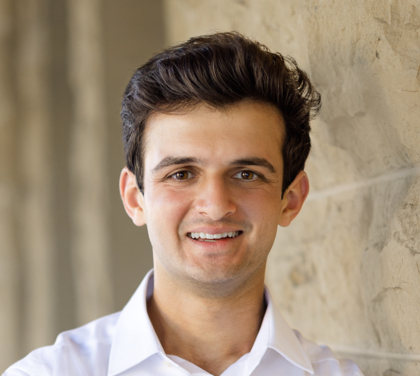

Ryan Hollingshead
Product @ Two Dots (Series A fintech startup)

about
I'm currently working in SF at a Series A fintech startup called Two Dots. We're automating the income verification process for rental applications. My role sits at the intersection of product, bizops, and finance.
Before this, I graduated from Stanford, where I concentrated on International Relations and Data Science within the Political Science major. I also was lucky enough to take some GSB courses focused on startups, negotiations, and sports business. Some additional past experiences:
- Healthcare consulting @ Mindfrog
- Venture capital @ Correlation Ventures
- ML internship @ Dynam.AI
writing
In addition to startups and investing, I think a lot about sports, especially football and soccer. Right now, France is my pick to win the World Cup. I share my thoughts on my Substack. A few pieces from there:
in addition
I'm an avid golfer. My favorite course as of now is Te Arai South in New Zealand.
{kind=link}
I've also gotten more interested in hiking recently. The Presidio is a great local option. Also had a great time at the Jenner Headlands Preserve.
{kind=link}
{kind=link}
I'm also a Chargers and Tottenham fan. Big things coming with De Zerbi as our new manager!